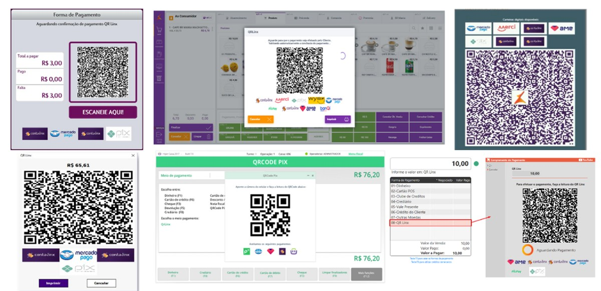
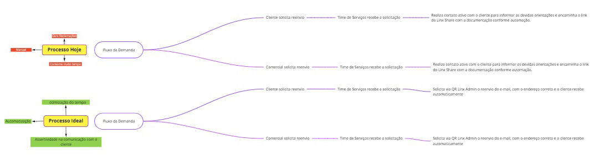
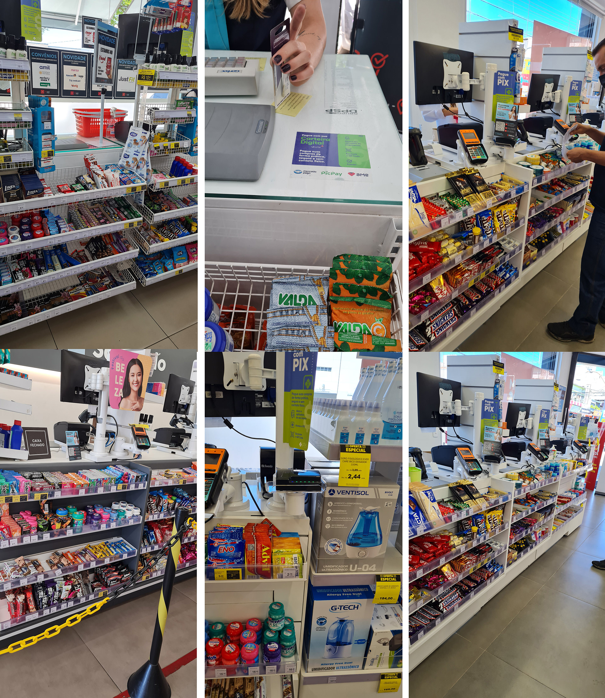
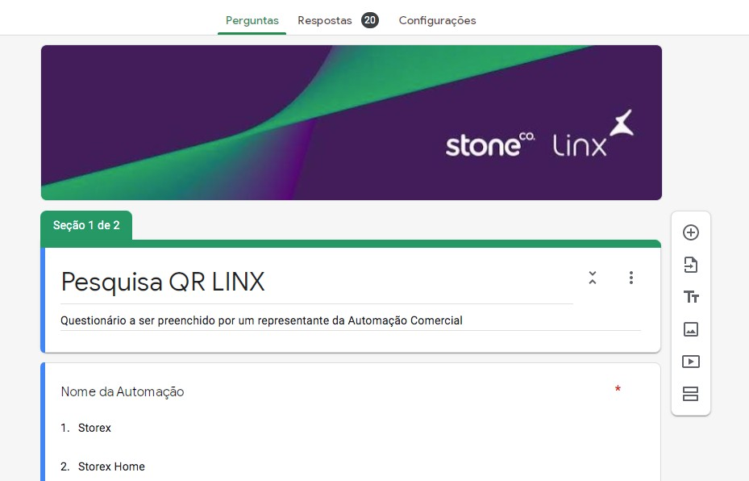

i.
Interface simplificada
Priorização de uma interface limpa e minimalista para geração e leitura de QR codes.
→ minimiza a carga cognitiva do usuárioCentralização de pagamentos digitais via QR code, unificando carteiras e provedores em uma única plataforma para a Stone Linx — simplificando a experiência de compra e venda.
O cenário de pagamentos digitais no Brasil apresentava uma diversidade crescente de carteiras e métodos de pagamento — gerando complexidade tanto para consumidores quanto para lojistas.
O projeto QR Linx surgiu para atender a essa demanda de simplificação, integrando diversas carteiras e métodos de pagamento em uma única solução.




A plataforma centralizou os principais provedores em um único display, com liberdade de escolha para o consumidor.
Priorização de uma interface limpa e minimalista para geração e leitura de QR codes.
→ minimiza a carga cognitiva do usuárioFluxo passo a passo com feedback claro em cada etapa, da leitura do QR até a confirmação.
→ reduz erro e ansiedade na transaçãoArquitetura flexível para integrar diversas carteiras e provedores de pagamento.
→ liberdade de escolha para o usuárioElementos visuais e informativos que transmitem segurança durante as transações.
→ reduz fricção emocional no pagamentoPesquisa e entendimento
Análise e definição
Concepção e prototipagem
Testes e validação
"Padronizar o QR code não é só uma questão estética — é o que garante que ele funcione."
Minha participação no projeto se encerrou antes da fase de mensuração de impacto e métricas de desempenho, então não posso apontar resultados quantitativos. O que ficou consolidado foi o processo:
Manual de boas práticas de QR code documentado para as automações.
Múltiplas carteiras e provedores unificados em uma única interface.
Protótipos testados com usuários reais antes da entrega técnica.
A pesquisa aprofundada sobre o comportamento do consumidor foi crucial para identificar as reais necessidades e direcionar o design para soluções eficazes.